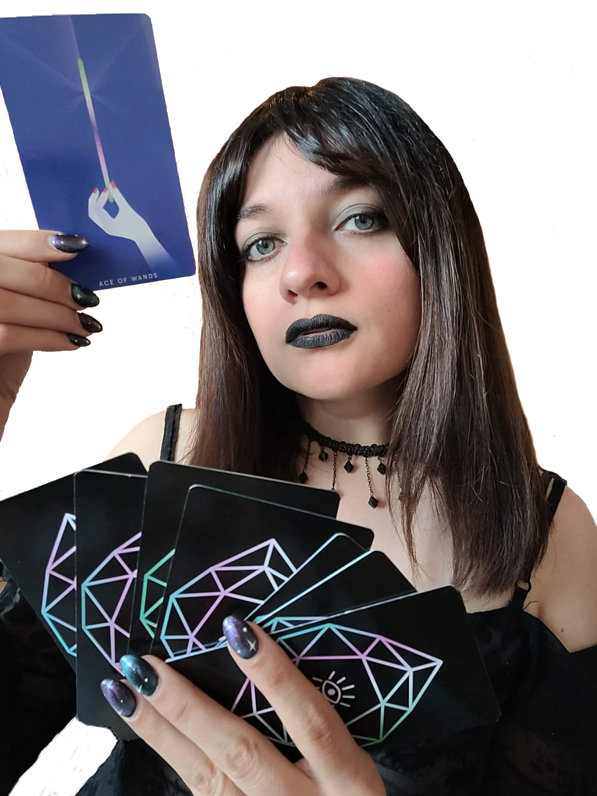
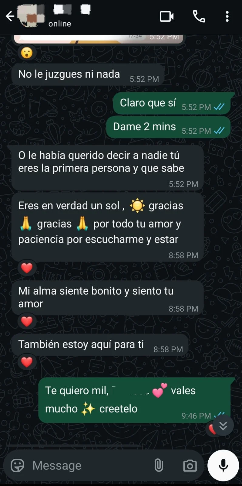
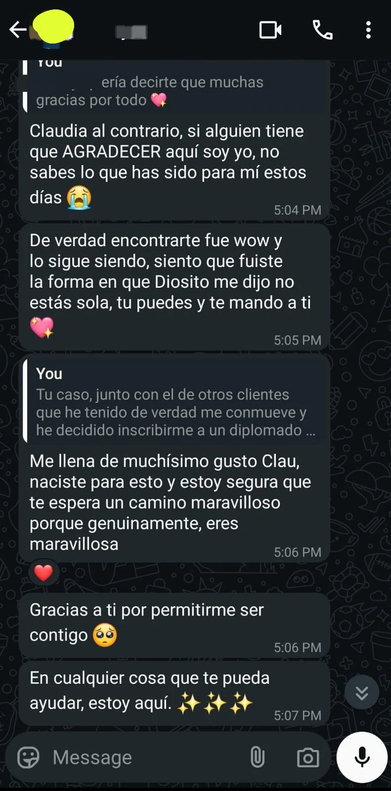
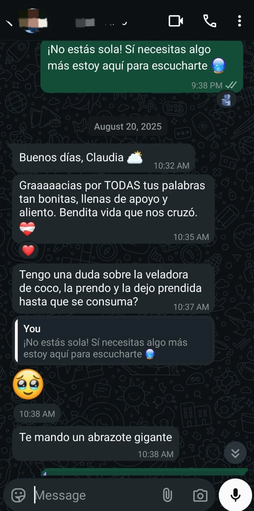

Lectura de cartas y tarot en Guadalajara Jalisco
Cierra ese ciclo y encuentra las respuestas a tu vida amorosa
Consulta del tarot precisa sin juicios. Pregunta lo que tu corazón no puede decir en voz alta.
Reservar sesión
Sobre Claudia
Tarotista Claudia especialista en lectura del tarot
Soy Claudia, tarotista intuitiva ubicada en Guadalajara Jalisco con más de 7 años de experiencia guiando a mujeres que buscan respuestas en el amor, en sus emociones y en su camino personal.
Creo profundamente que el tarot no adivina: revela. Es una herramienta para mirar hacia adentro, soltar lo que duele y tomar decisiones desde la claridad.
Mi enfoque es directo, empático y sin juicios. Cada lectura es una conversación sagrada entre tu energía y la guía que el universo tiene para ti.
No estás sola: si estás aquí, es porque tu alma busca entender, cerrar ciclos y recuperar su poder.
Lecturas de Tarot para Sanar, Entender y Avanzar
Tu intuición ya lo siente. El tarot solo te lo confirma. Obtén claridad sobre tu relación, tu futuro y lo que necesitas dejar atrás para sanar.
- Lectura amorosa: ¿Te ama? ¿Volverá? ¿Hay alguien más?
- ¿Cortar o seguir? Consulta para decisiones difíciles.
- Energía de tu pareja: lo que siente, lo que esconde.
- Cierre de ciclos: sana lo que no te deja avanzar.
- Compatibilidad energética con otra persona.
- Canalización intuitiva con respuestas directas.
- Lectura mensual: qué viene en amor, trabajo y emociones.
- Secretos revelados: lo que nadie te ha contado en tu relación.
Testimonios



Primera Pregunta Gratis: Empieza con Claridad
Haz una pregunta. Recibe una respuesta. Sin compromiso.
¿Tienes algo que te inquieta? ¿Una duda que no te deja dormir? Claudia te ofrece una tirada gratuita para responder una pregunta puntual de forma clara, directa y confidencial.
Es tu oportunidad de sentir cómo trabaja el tarot antes de agendar una lectura completa.Porque a veces, una sola respuesta puede cambiarlo todo.
 Contactame ahora
Contactame ahora